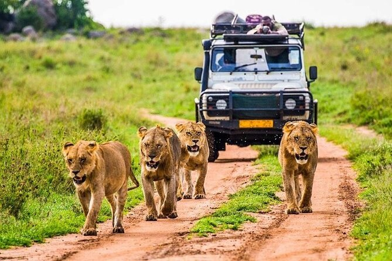

Tarangire National Park Safari: Day Trips & Day Tour Cost

Book affordable guided tours from Arusha to experience massive elephant herds and iconic baobab trees.
Tarangire National Park offers one of the most accessible high-density wildlife viewing opportunities in Tanzania's northern safari circuit. Located an easy two-hour drive from Arusha, this reserve makes an ideal single-day excursion. Budgeting for your day trip involves balancing park entry fees, 4x4 safari vehicle rentals, and the specialized tracking knowledge of certified local guides.
01 / Maximizing a Single-Day Route
Early morning departures from Arusha ensure your vehicle passes through the Tarangire gates as predatory wildlife activity peaks. Day trip routes concentrate primarily along the Tarangire River basin, where massive elephant families congregate to excavate dry riverbeds for water. This high concentration of mammals within a compressed geographical area ensures an action-packed game drive within a short time frame.
02 / Understanding Tour Pricing Matrix
The total cost of a Tarangire day tour scales based on vehicle occupancy and seasonal conservation tariffs. Booking a shared safari vehicle lowers individual expenditures, while private bookings allow custom flexibility around remote photography loops. Selecting packages that bundle park permits, box lunches, and driver logistics upfront avoids hidden operational surcharges at the main gate.